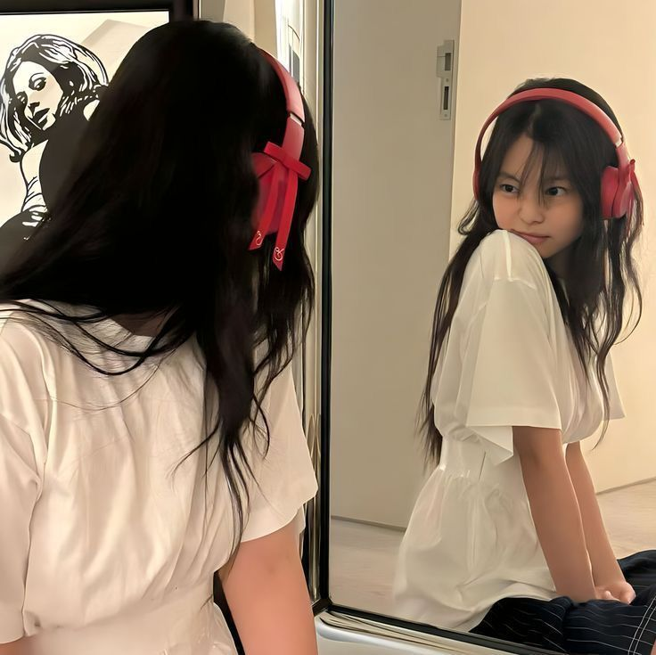
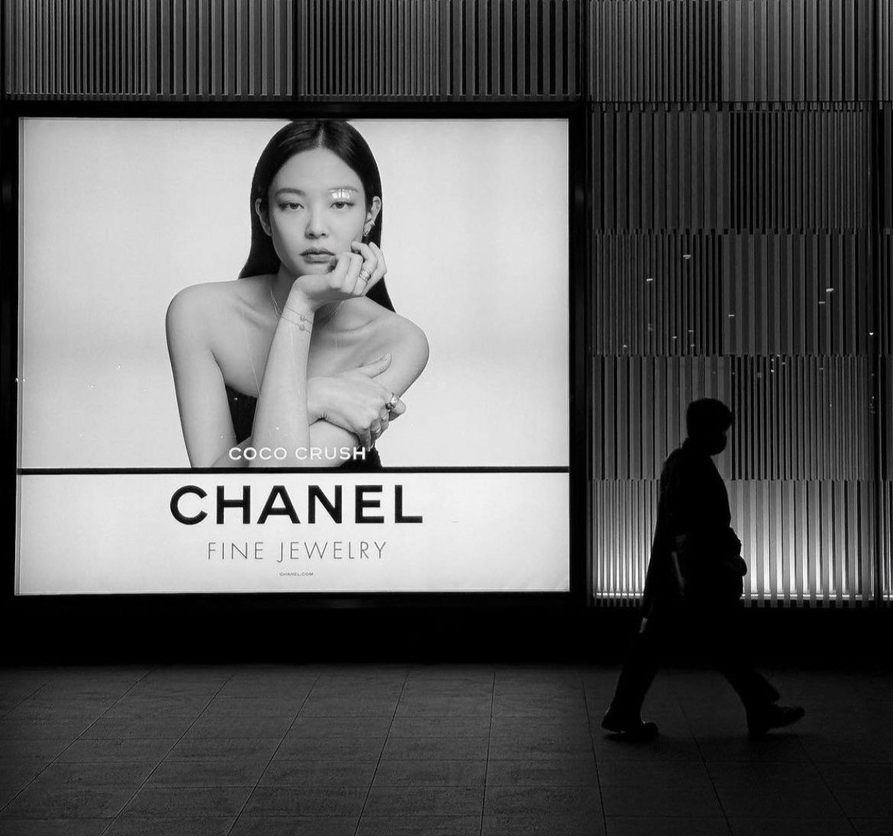
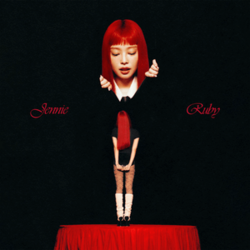
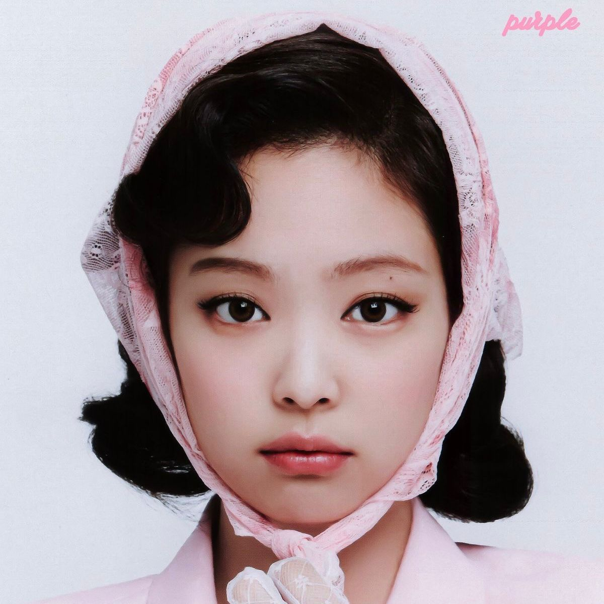
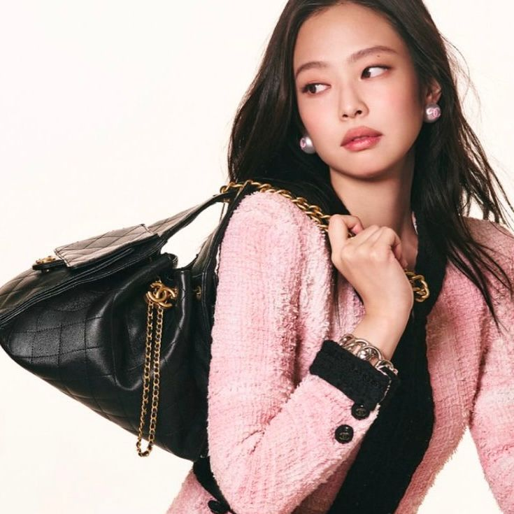
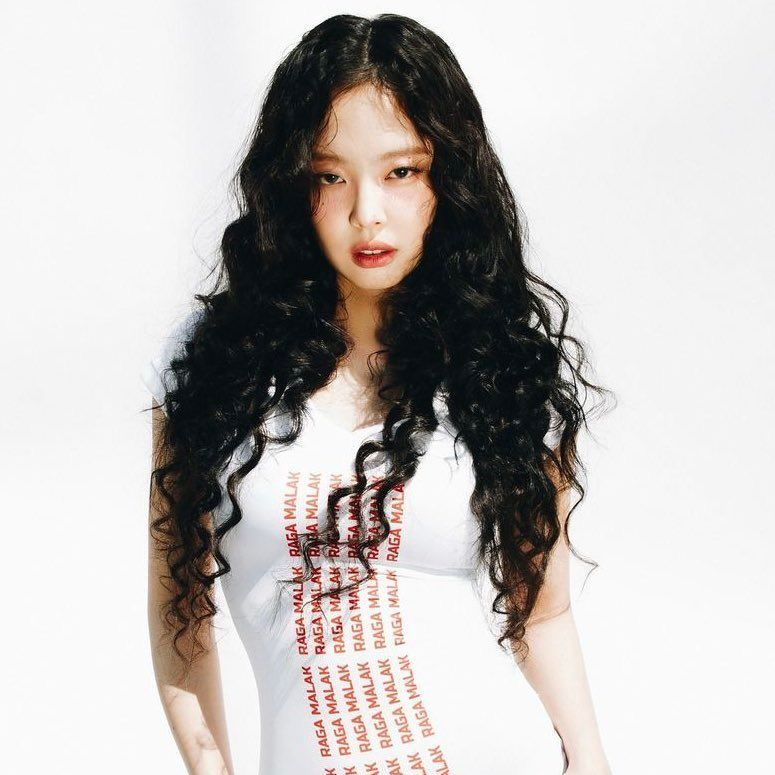
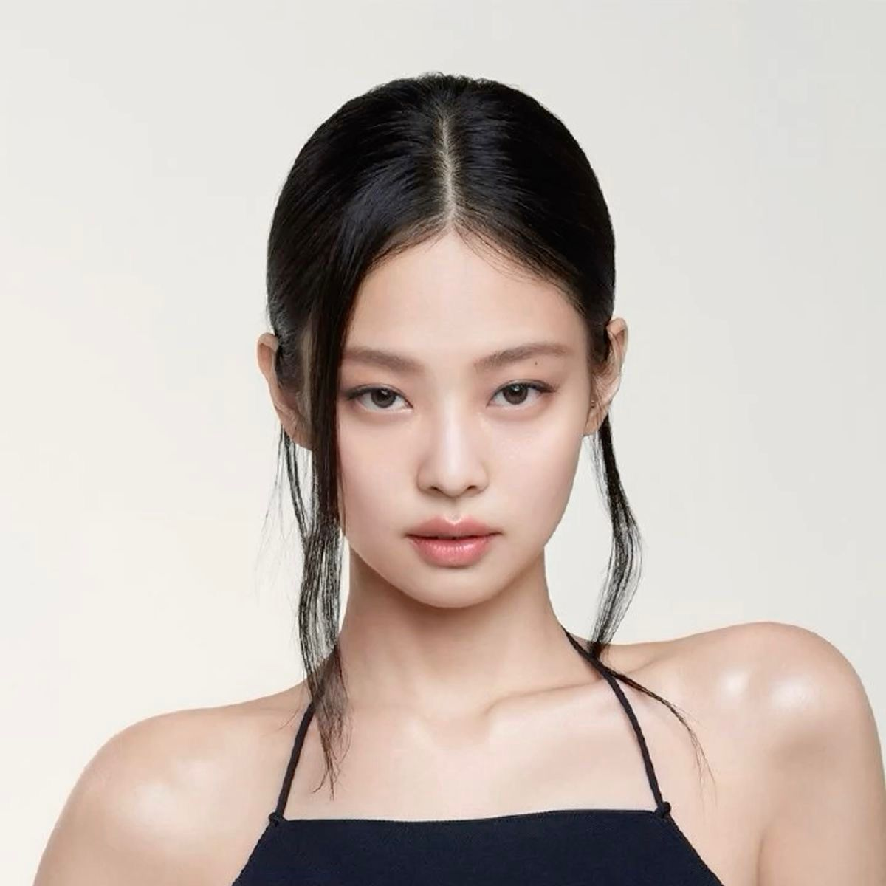

JENNIE KIM

Jennie Kim adalah seorang artis solo yang memukau dengan penuh karisma dan gayanya yang unik. Jennie dikenal juga dengan ekspresinya yang playful serta pribadi yang humoris dan menyenangkan. Jennie memiliki penampilannya yang selalu fashionable, membuat setiap momen di panggung maupun foto terlihat hidup. Gaya Jennie selalu berhasil mencuri perhatian. Dari outfit kasual hingga red carpet, ia mampu memadukan warna dan aksesoris dengan cara yang chic tapi tetap terlihat fun. Banyak fans meniru gayanya karena kombinasi elegan dan casual yang ia tampilkan.
CREATIVE TALENTS

Di luar perannya sebagai penyanyi dan rapper utama di BLACKPINK, ia telah membuktikan dirinya sebagai seniman serba bisa, kreatif dan ikon global. Ia tertarik pada fashion, fotografi, dan sering mengekspresikan dirinya melalui visual yang unik. Kreativitasnya ini membuatnya selalu menjadi inspirasi bagi banyak orang. jennie disebut sebagai ikon mode dan desain maupun pengaruh besar dalam industri mode global yaitu dijuluki "Human Channel". Jennie menjadi Brand Ambassador merek mewah seperti Chanel, Calvin Klein, Jacquemus, Porsche dan masih masih banyak yang lainnya.
JENNIE PHOTOSHOOT




